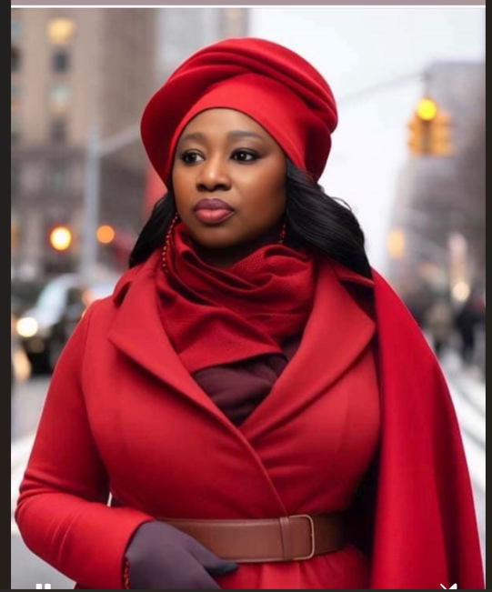

« L’excellence n’est pas un objectif, c’est une discipline quotidienne. »
Madame Doumbia Mariama, fondatrice du Groupe Élite Africa et dirigeante de DM‑IMMOBILIER, est une informaticienne TSSR et entrepreneure ivoirienne résidant en France. Femme visionnaire, dynamique et persévérante, elle a construit un parcours riche et multidisciplinaire : écrivaine, entrepreneuse, agente de service, professionnelle du paramédical…
Grâce à sa polyvalence et à son sens aigu de l’innovation, elle développe des projets immobiliers modernes, accessibles et pensés pour améliorer durablement la qualité de vie des familles. Son engagement repose sur trois piliers : l’excellence, l’accessibilité et la confiance.
Créer des logements modernes, accessibles et écologiques, tout en valorisant les zones rurales et périurbaines grâce à des mini‑cités innovantes et adaptées aux besoins des familles.